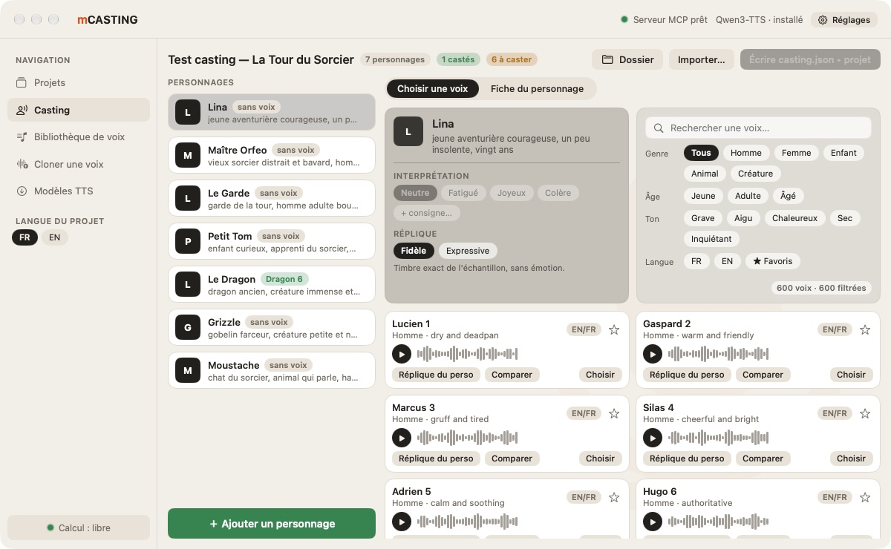
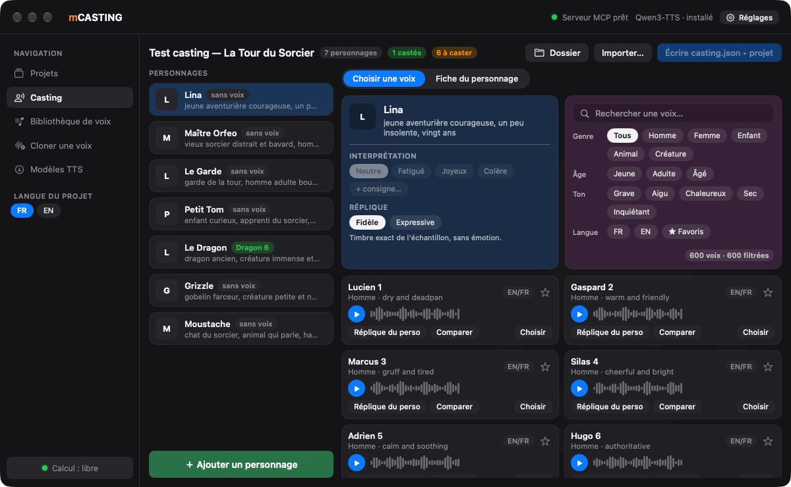
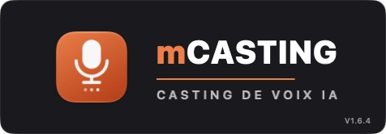
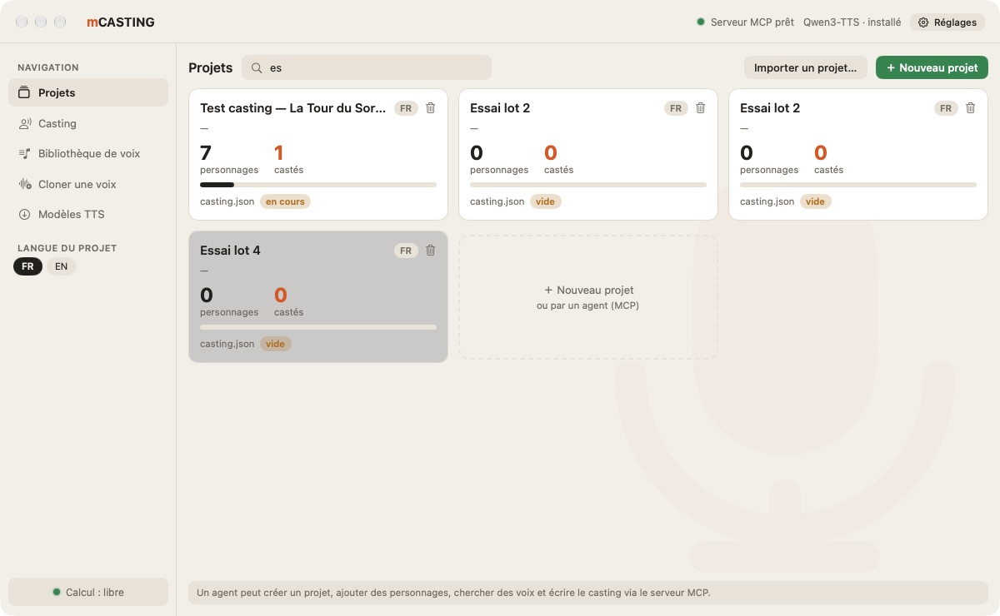
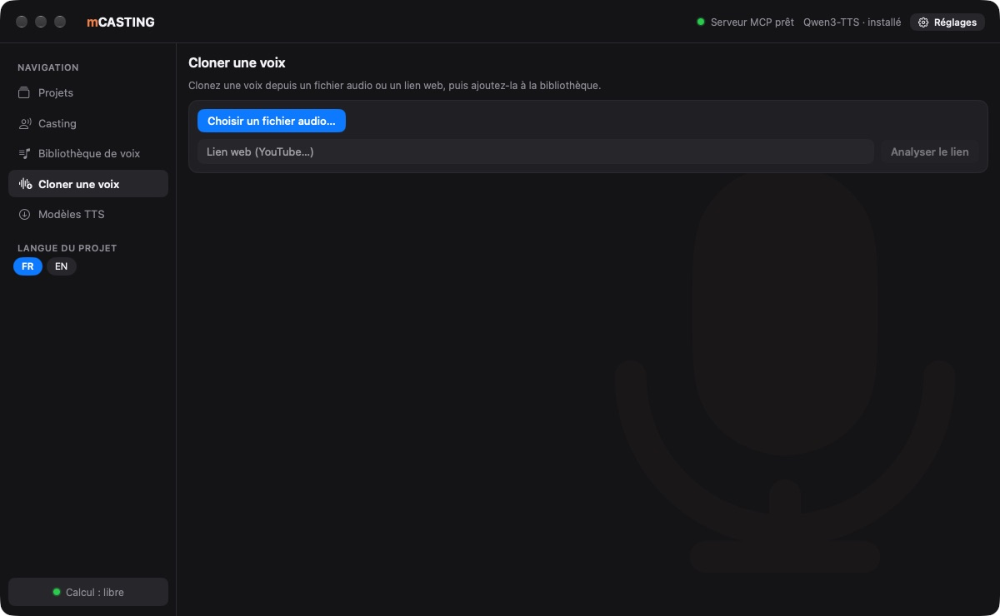
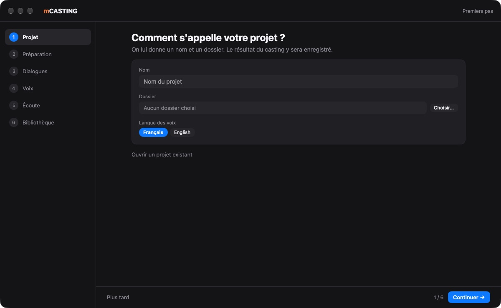
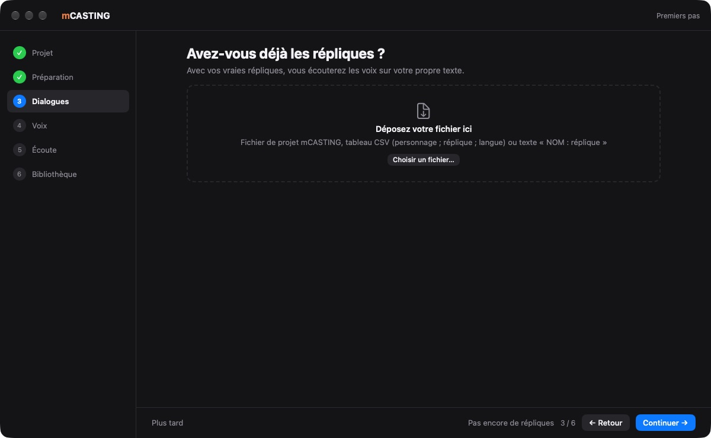

Design Flat Mat, couleurs, typographie, composants, écrans et comportements de l'application.

Version 1.6.4 · 21 novembre 2026 DESKTOP MAC TOOLKIT · Starbudweiser & Claude Code (Anthropic) Licence MIT · github.com/starbudweiser/mCASTING
Sommaire
1Principes du design Flat Mat
2Couleurs
3Typographie et mesures
4Composants
5Structure de la fenêtre
6Splash
7Projets
8Casting
9Fiche du personnage
10Bibliothèque de voix
11Cloner une voix, Modèles TTS, Réglages
12Guide « Premiers pas »
13Comportements, langues et accessibilité
1Principes du design Flat Mat
mCASTING suit le design Flat Mat du DESKTOP MAC TOOLKIT : des surfaces mates et plates, sans ombre portée, sans reflet ni dégradé. La hiérarchie vient des aplats de couleur, des filets d'un pixel et de la typographie, pas des effets.
Mat et plat
Cartes en aplat, filet de 1 px, rayon 12 pour les cartes et 8 pour les boutons et les champs. Aucun flou, aucune ombre.
Beige chaud et sombre profond
Thème clair sur un beige chaud (#f4f1ec), thème sombre sur un quasi-noir (#131316). Les deux suivent le réglage du système.
Le « m » orange
Partout où le nom de l'appli est écrit dans l'interface (barre du haut, splash, À propos), son « m » minuscule prend l'orange du logo. Jamais dans un menu déroulant.
L'interface dit vrai
États réels affichés (serveur MCP prêt, moteur installé, calcul en cours), durées et tailles mesurées, coûts chiffrés avant toute dépense.
Une sélection, un contraste
L'élément choisi est toujours le plus contrasté de son groupe : puce pleine, carte teintée, contour d'accent.
Filigrane discret
Le micro de l'icône apparaît en très grand, à peine visible, au fond de la zone de contenu.
2Couleurs
Couleurs de base
Chaque couleur a une valeur pour le thème clair et une pour le thème sombre (Flat.dyn).
Fond#f4f1ec · #131316
Carte#ffffff · #232327
Contrôle#ebe6de · #2c2c31
Filet#e3ddd2 · #303035
Texte#26231e · #f5f5f7
Texte secondaire#7b756a · #98989f
Accent (sélection)#26231e · #0a84ff
Marque (« m »)#d9622b · #f08a52
Succès#3f8f5a · #30d158
Attention#b7791f · #ff9f0a
Création (vert)#3f8f5a · #2f7d52
Avatar#26231e · #2c2c31
Panneaux colorés de l'écran Casting
Les panneaux principaux de l'écran Casting ont un fond propre : une couleur en thème sombre, un gris chaud en thème clair.
Personnage, identité#ccc8c0 · #1d3350
Recherche de voix#e3e0da · #3e2440
Voix actuelle#e3e0da · #1c3f2d
Répliques d'exemple#e3e0da · #36285a
Interprétation (fiche)#ccc8c0 · #423a1c
Règle « ton sur ton »
Sur un panneau coloré, les éléments ne gardent pas les gris de l'appli : ils prennent la teinte du panneau, éclaircie ou creusée. Seule la sélection est très contrastée.
Élément
Thème clair
Thème sombre
Puce et compteur au repos
blanc 65 %
blanc 9 %
Texte des puces
#26231e
blanc 88 %
Sélection (puce active, boutons Extrait)
#26231e, texte blanc
blanc 94 %, texte #15151a
Champ de saisie
blanc 75 %, filet noir 6 %
noir 22 %, filet blanc 6 %
Description
#1d1b18 à 66 %
blanc 68 %
En-têtes de section
#1d1b18 à 55 %
blanc 55 %
Filet de séparation, contour
noir 8 % · 6 %
blanc 10 % · 6 %
Avatar
noir 72 %
noir 28 %
3Typographie et mesures
Police du système (SF Pro), aucune police embarquée. Les tailles sont fixes et identiques d'un écran à l'autre.
Usage
Taille
Graisse
Détail
Titre de page
16 pt
semi-gras
« Projets », « Réglages », nom du projet.
Question du guide
24 pt
gras
Une question par écran.
Nom d'un personnage, d'une voix
13 à 15 pt
semi-gras
Une seule ligne, troncature en fin avec infobulle.
Aplat carte, filet 1 px, rayon 12 ; peut recevoir une teinte de panneau (règle « ton sur ton »).
Tuile
Ligne de liste (personnage, voix, projet) ; sélection = fond d'accent à 24 %, sans contour.
Champ
Fond contrôle, rayon 8, marges 7 × 11, sans contour (filet discret sur panneau coloré).
Onde
Barres de 2,5 px espacées de 1,5, hauteur 22 ; accent pendant la lecture.
Bouton lecture
Rond de 26 px, fond accent, icône lecture ou arrêt.
Avatar
Carré arrondi avec l'initiale du personnage, texte blanc gras.
Carte de choix (guide)
Bouton radio, titre, phrase d'aide ; la carte choisie a un contour d'accent et révèle ses options.
Règle d'accessibilité : un bouton n'est jamais placé à l'intérieur d'une carte elle-même cliquable. Les actions secondaires sont posées à côté ou en surimpression, pour que chaque bouton reste atteignable.
5Structure de la fenêtre
Barre du haut (barre de titre transparente) : nom de l'appli avec son « m » orange, état du serveur MCP (point vert « Serveur MCP prêt »), état du moteur (« Qwen3-TTS · installé »), bouton « Réglages ».
Barre latérale : Navigation (Projets, Casting, Bibliothèque de voix, Cloner une voix, Modèles TTS), Langue du projet (FR / EN), et en bas l'état du calcul (« Calcul : libre », ou la tâche en cours avec une barre de progression et un pourcentage).
Contenu : titre de page, barre d'actions à droite, puis la page elle-même, sur le filigrane du micro.
Icône de barre de menus : micro orange ; projet actif, calcul en cours, ouvrir mCASTING, Premiers pas, À propos, Quitter.

Fenêtre principale, thème sombre : barre du haut, barre latérale et écran Casting.
6Splash

Carte sombre de 476 × 166 px dans une fenêtre de 500 × 190 px sans cadre, centrée exactement sur l'écran. L'icône arrive en tourbillon, les lettres du nom se retournent une à une, puis le filet orange se trace et le sous-titre « Casting de voix IA » apparaît ; la version est indiquée en bas à droite.
Instant
Événement
0 s
Splash visible ; l'animation démarre au premier affichage.
2 s
Ouverture de la fenêtre principale (ou dès qu'elle est prête).
3 s
Début de la sortie (zoom arrière et fondu, 600 ms).
≈ 3,6 s
Splash fermé. Avec « Réduire les animations », splash fixe et mêmes durées.
7Projets

Page Projets, thème clair (liste filtrée).
Une carte par projet : nom, langue, nombre de personnages et de personnages castés, barre d'avancement, fichier casting.json et état (« vide », « en cours »).
Le projet actif est en surbrillance ; un clic l'ouvre dans Casting.
Corbeille en haut à droite de chaque carte : confirmation, puis le projet disparaît de mCASTING sans toucher à son dossier.
Filtre, « Importer un projet… » et « Nouveau projet » (ouvre le guide) ; la dernière carte rappelle qu'un agent peut créer un projet par MCP.
8Casting
Écran Casting, thème clair : panneaux en gris chauds.
En-tête : nom du projet, étiquettes d'avancement, « Dossier », « Importer… », « Écrire casting.json ».
Colonne Personnages : avatar, nom, voix choisie (ou « sans voix »), rôle ; « Ajouter un personnage ». Clic droit et sélection multiple : voix aléatoires.
Onglets « Choisir une voix » et « Fiche du personnage ».
Panneau du personnage (bleu en sombre) : identité, extraits de la voix actuelle, interprétation (émotion), mode de réplique Fidèle ou Expressive.
Panneau de recherche (prune en sombre) : recherche texte, filtres genre, âge, ton, langue, favoris ; nombre de voix filtrées.
Cartes de voix : nom, genre et ton, langues disponibles, étoile, onde et lecture, « Réplique du perso », « Comparer », « Choisir ».
9Fiche du personnage
Fiche du personnage, thème sombre.
Deux colonnes, rien de tronqué : Identité (nom, rôle et description, notes), Voix actuelle du projet source avec ses extraits, Répliques d'exemple (chacune avec « Essayer », liste modifiable) et Interprétation par défaut. Pour une créature ou un animal, les effets de voix et le cri s'ajoutent.
10Bibliothèque de voix
Bibliothèque, thème sombre : grille de voix et fiche de la voix sélectionnée.
Filtres : genre, langue, voix utilisées ou jamais utilisées.
Grille de cartes de voix ; à droite, la fiche de la voix : recette, moteur, échantillons disponibles, projets qui l'utilisent, et un essai sur une réplique libre avec émotion.
Bibliothèque, thème clair.
11Cloner une voix, Modèles TTS, Réglages

Cloner une voix : fichier audio ou lien web, puis choix de l'extrait, transcription et consentement.Modèles TTS : moteur local et modèles, état « installé », taille, barre de téléchargement.
Réglages
Général : langue de l'interface (automatique), dossier de la bibliothèque avec « Ouvrir dans le Finder ».
Mises à jour : installation automatique, version installée, recherche manuelle.
Serveur MCP : transport stdio, commande prête à copier pour déclarer le serveur dans un agent, liste des outils.
Journal des appels agent : heure et nom de chaque outil appelé.
12Guide « Premiers pas »
Fenêtre plein contenu : barre du haut avec le nom de l'appli et « Premiers pas », étapes à gauche (numéro, coche verte une fois faites), contenu centré dans une colonne de 860 px maximum, barre du bas avec « Plus tard », le compteur d'étapes, « Retour » et l'action principale.

1. Projet : nom, dossier, langue des voix.2. Préparation : IA déjà utilisée, IA locale ou description manuelle.

3. Dialogues : dépôt d'un fichier JSON, CSV ou texte.4. Voix sur ce Mac : modèles adaptés au matériel, le conseillé est marqué.4. Voix sur un autre ordinateur : adresse, clé facultative, « Tester ».4. Service en ligne : clé ElevenLabs, solde, import gratuit des voix.
Les étapes suivantes — Écoute (mêmes répliques dites par chaque modèle coché), Créatures (voix suggérées, effets, cris) et Bibliothèque — reprennent la même mise en page.
13Comportements, langues et accessibilité
Ouverture : la fenêtre principale s'ouvre centrée sur l'écran du pointeur, à la dernière taille choisie (la position n'est jamais restaurée).
Quatre langues : français (rédigé en premier), anglais, espagnol, italien ; même interface, mêmes clés, langue choisie d'après le système (anglais par défaut).
Thèmes : clair et sombre selon le système ; chaque couleur est définie pour les deux.
Mouvement : « Réduire les animations » rend le splash fixe ; les animations n'utilisent que l'opacité et les transformations.
Accessibilité : actions jamais imbriquées dans une carte cliquable, libellés explicites sur chaque bouton, infobulles sur les noms tronqués.
Discrétion : un mode de lancement silencieux (--silent) ouvre l'appli sans la mettre au premier plan, pour les essais automatisés.